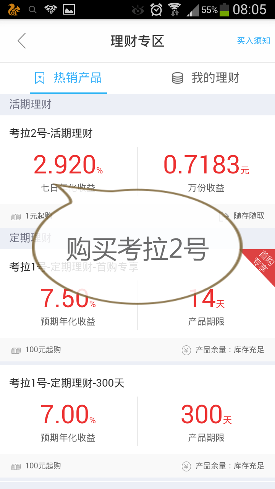

首先说明刷星并不是到达六星就能下卡，刷到六星只能说你有了填表的资格，具备了申请信用卡的基本条件。刷星主要是多数网点可以插队，享受贵宾服务。
★★★★★切记不要打银行客服电话咨询刷星问题★★★★★
★★★★★切记不要向银行网点人员炫耀刷星问题★★★★★
刷到六星就好，刷到七星，如果你无砖的话或许会有问题（看帖子大神们说的）
首先到拉卡拉官网的下载中心下载一个拉卡拉手机客户端，然后注册。（先注册节省时间，据说新手有转出限制，我买之前先注册的，买来之后就是直接秒进秒出。但是有些大神说有10天的限制，为了保险起见还是等10天吧！）

然后去网上买拉卡拉手机刷卡器（看见论坛有用收款宝的，楼主自己用的是手机刷卡器）


以上两种均可，我个人使用的是蓝牙版的，在某东99元
下面是实战部分：
打开拉卡拉手机客户，点击赚点钱
选择《考拉2号-活期理财》

点击进入，然后点击买入
输入你要买入的的钱数（最好第一次购买选择1元，试一下是不是秒取出）
选择刷卡支付

选择刷卡，插入你的拉卡拉手机刷卡器或者是打开蓝牙手机刷卡器
★★★★★注意：插入或者刷卡的是你的借记卡★★★★★
支付成功后返回，点击我的理财或者再次点击考拉2号
在持有资产那会显示你买入的钱数，点击取出
输入你取出的钱数
选择取出到银行卡(银行卡就是你绑定的卡)
几分钟内就会到账！
如此每天可以反复三次！大神们可以一天六次，因为可以转出到钱包，但是我目前还是不能转出到钱包，打电话问客服回答是因为是新手。
下面为大家附上工行星级服务评定标准，供大家参考计算需要的星值与钱数
1W是200点星值
个人客户按贡献星级细分为七星级客户、六星级客户、五星级客户、四星级客户、三星级客户、准星级客户共六大类，每类客户的评价标准如下：
（1）七星级客户：星点值在80000（含）以上。
（2）六星级客户：星点值10000（含）～80000。
（3）五星级客户：星点值2000（含）～10000。
（4）四星级客户：星点值500（含）～2000。
（5）三星级客户：星点值50（含）～500。
（6）准星级客户：星点值0（不含）～50。
（7）星点值等于0的客户不予评定星级。
符合以下条件之一的客户，若当前服务星级较低，系统将自动即时调高至对应星级：
（1）签订私人银行服务协议，调整服务星级为七星。
（2）开立工银财富理财金账户卡、白金信用卡，调整服务星级为六星。
（3）开立理财金账户、信用卡金卡，调整服务星级为五星。
（4）开立信用卡普卡，调整服务星级为四星。
星点值是您在我行（全行范围）近六个月的资产、负债和中间业务进行汇总计算出来的。
相关指标及计算
1、金融资产
金融资产指标由短期资产和中长期资产两个细项组成，指标计算为各项金融资产的半年日均余额。
（1）短期资产
主要包括：活期储蓄存款、第三方存管、灵通快线理财产品、货币市场基金、信用卡存款。每万元短期资产可获得135星点值。
（2）中长期资产
主要包括：定期储蓄存款（含定活两便）、公积金存款、理财产品（不含灵通快线）、基金（不含货币市场基金）、国债、保险、黄金（含纸黄金、实物黄金、品牌金）等。每万元中长期资产可获得100星点值。
2、个人负债
个人负债指标由个人住房按揭贷款、其他个人贷款、卡透支三个细项组成，指标计算口径为各项个人负债的半年日均余额。
（1）每万元个人住房按揭贷款可获得100星点值。
关于LKL单笔限额、单日限额见下图
根据论坛大神们的帖子总结，每个月的4号开始各个地区开始更新星级，大家如果刷够星级，可以坐等更新，不要着急！
2016年1月部分地区已经更新星级，LKL依然有效！
目前购买考拉2号不支持赎回到钱包里面！也就是每天只有三次机会！